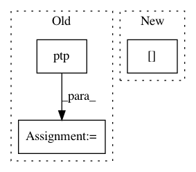

16ddc061d323503054cac197148bbc787c8ddb91,pyntcloud/structures/octree.py,Octree,build,#Octree#,29
Before Change
self.build()
def build(self):
level_ptp = np.ptp([self.xyzmin, self.xyzmax], axis=0) / 2
mid_points = np.zeros_like(self.points)
mid_points[:] = (self.xyzmin + self.xyzmax) / 2
for i in range(self.max_level):
level_ptp /= 2
bigger = self.points > mid_points
for j in range(3):
mid_points[:,j][bigger[:,j]] += level_ptp[j]
mid_points[:,j][~bigger[:,j]] -= level_ptp[j]
bigger = bigger.astype(np.uint8)
self.structure.loc[:,i] = ((bigger[:,1] * 2) + bigger[:,0]) + (bigger[:,2] * (2 * 2))
def get_level_as_sf(self, level):
After Change
mid_points = np.zeros_like(self.points)
mid_points[:] = (self.xyzmin + self.xyzmax) / 2
for i in range(self.max_level):
self.sizes[i] = level_ptp
level_ptp /= 2
bigger = self.points > mid_points
mid_points = np.where(bigger, mid_points + level_ptp, mid_points - level_ptp)
In pattern: SUPERPATTERN
Frequency: 3
Non-data size: 3
Instances
Project Name: daavoo/pyntcloud
Commit Name: 16ddc061d323503054cac197148bbc787c8ddb91
Time: 2016-11-28
Author: daviddelaiglesiacastro@gmail.com
File Name: pyntcloud/structures/octree.py
Class Name: Octree
Method Name: build
Project Name: daavoo/pyntcloud
Commit Name: b86819a7527252041344e73097488720319d6cfc
Time: 2016-11-04
Author: daviddelaiglesiacastro@gmail.com
File Name: pyntcloud/plot/points.py
Class Name:
Method Name: plot_points
Project Name: has2k1/plotnine
Commit Name: 2a8dadcd290946e5fe2b7f9c941c84fe85fa9648
Time: 2016-07-11
Author: has2k1@gmail.com
File Name: ggplot/stats/stat_bindot.py
Class Name: stat_bindot
Method Name: compute_group